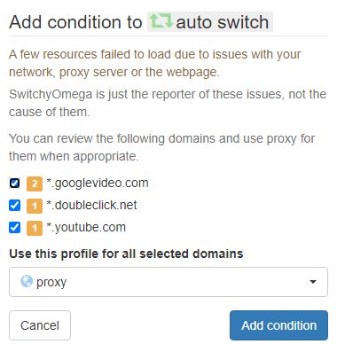
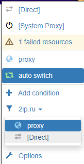
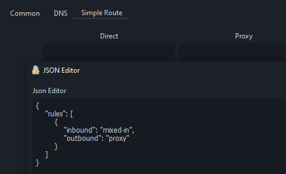

Приветствую.
В браузере использую плагин Proxy SwitchyOmega, с его помощью я могу:
- В пару кликов добавить сайт с текущей вкладки в правила для открытия через Proxy.
При этом он показывает, какие еще ресурсы использует сайт и всех их можно добавить в правила для его корректного функционирования, этакий аналог geosite некобокса, очень удобно.

-
Переключаться между режимами Direct/Proxy (влияет на все вкладки браузера)
-
Временно активировать режим Direct/Proxy для сайта с текущей вкладки (сбрасывается при перезапуске браузера). Это мне важно. Часто возникает необходимость разово заглянуть на какой-то сайт из поисковой выдачи, куда не пускает из России (забанена), и не нужно создавать/удалять правило под этот разовый визит.

Такой вариант использования связки plugin+nekobox для меня был оптимален - проксируются только нужные ресурсы, а остальное идет напрямую.
В плагине в качестве сокс прокси указан локалхост с портом 2080, который слушает nekobox. В самом nekobox установлен Default outbound - Proxy.
И вот понадобилось пустить через прокси процесс дискорда. Выяснилось, что это возможно только в режиме Tun, а в этом режиме весь трафик системы идет через прокси из-за default outbound. Это нам не надо.
Меняем default outbound на bypass и выясняется, что на сокс с 2080 порта это тоже действует. Плагин в браузере становится бесполезен.
Была попытка подстроиться под это и перекинуть сайты из правил плагина в настройки роутинга приложения и отказаться от плагина. Это работает, но крайне неудобно постоянно лезть в конфиг nekobox для внесения в список сайтов “разового визита”, а потом их оттуда удалять или оставлять мусорной записью.
Вариант при котором я делаю def. outbound: proxy и хожу везде без проблем, при этом пустив RU/РФ/SU ресурсы напрямую - мне не подходит. Я хочу проксировать, только то что мне нужно и не рисковать засветом своего хоста на ресурсах внутри России (тот же yastatic.net например).
Пробовал вернуться к исходному варианту, а Дискорд проксировать через ProxyCap на порт 2080. Вариант рабочий, но не хочется держать сторонее ПО + ProxyCap для правила требует прямой путь к приложению, а у дискорда в названии папки содержится версия, и она меняется после обновления, из-за чего постоянно приходится указывать новую папку.
И получается, что сценария плагин + Discord я могу достичь только разными outbound для локального Socks и для Tun. Это возможно как-то сделать? Правила там какие-то кастомные?
Спасибо осилившим.
Для Дискорда есть такая штука, и Tun не нужен, попробуйте:
в custom route добавь правило
{
"inbound": "mixed-in",
"outbound": "proxy"
}
Спасибо,для дискорда сгодилось бы, но в случае, если нужно еще что-то проксировать, мы возвращаемся к исходной проблеме.
Насколько я понял, как раз “inbound: mixed-in” nekobox запускает на 2080, а этим правилом переопределяется его outbound. Это именно то что мне было нужно, все работает, спасибо 
На случай, если кто-то с моим уровнем знаний и подобным запросом наткнется на эту тему, правило должно быть внутри блока rules:

У меня в custom rules было пусто и я об этом не сразу вспомнил.